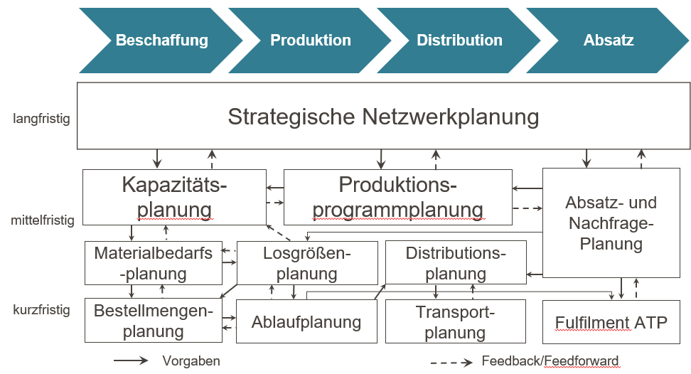
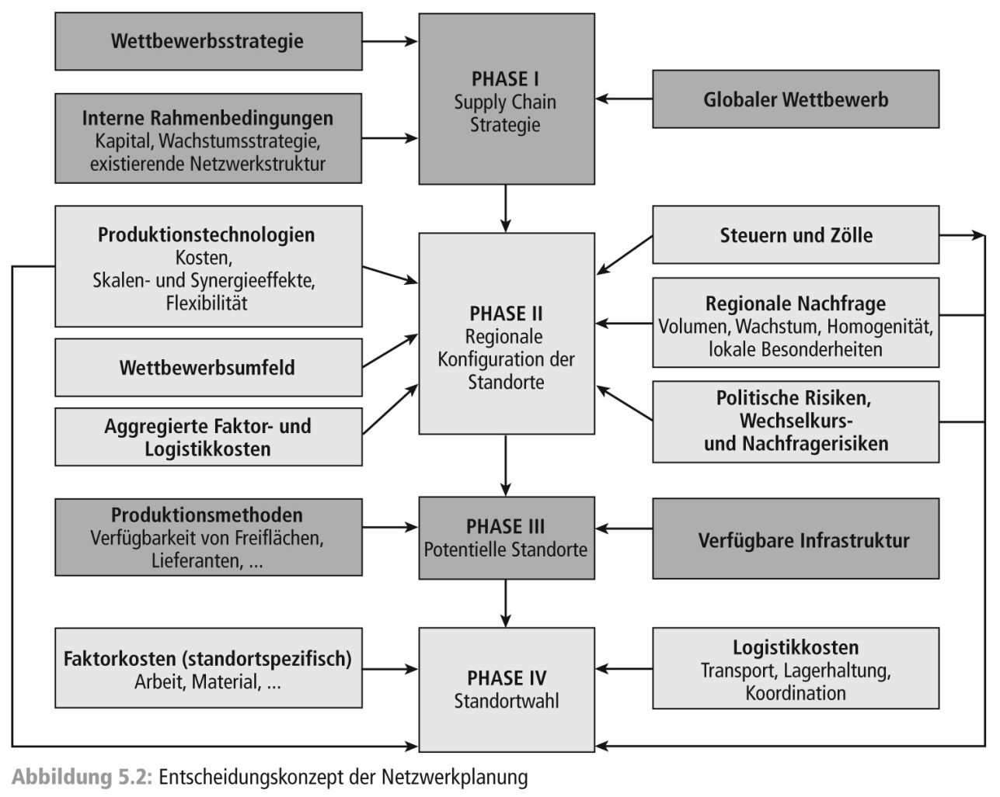
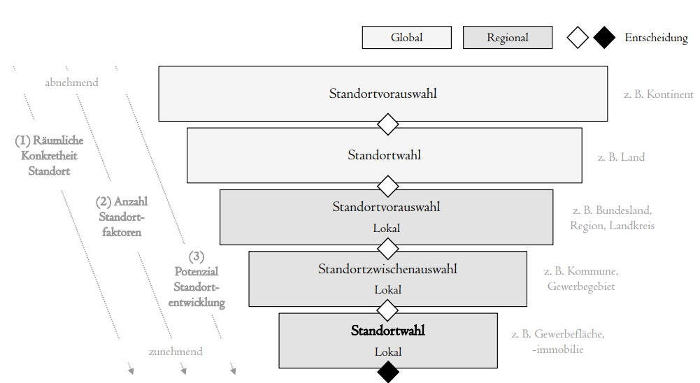
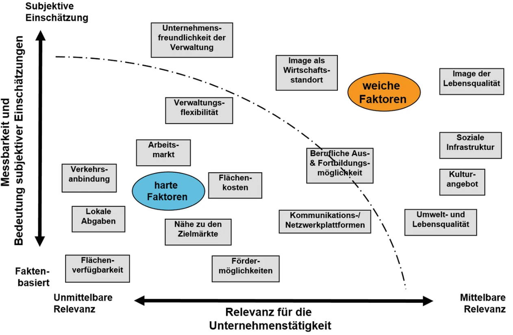
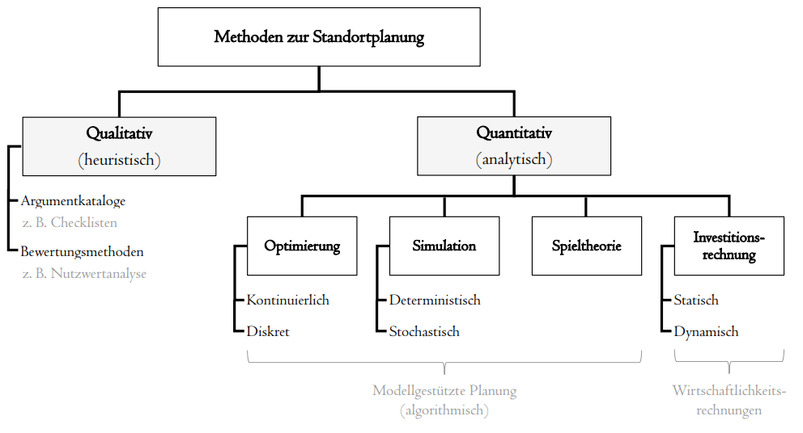
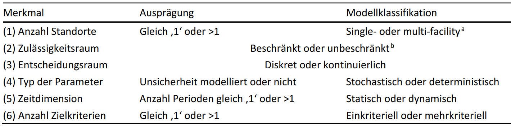
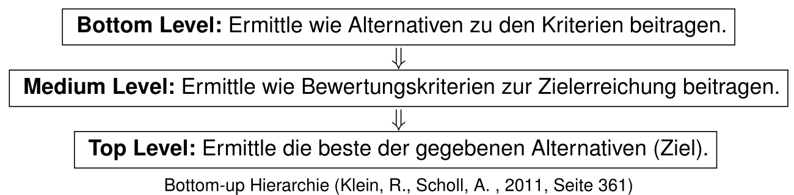
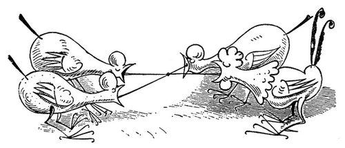
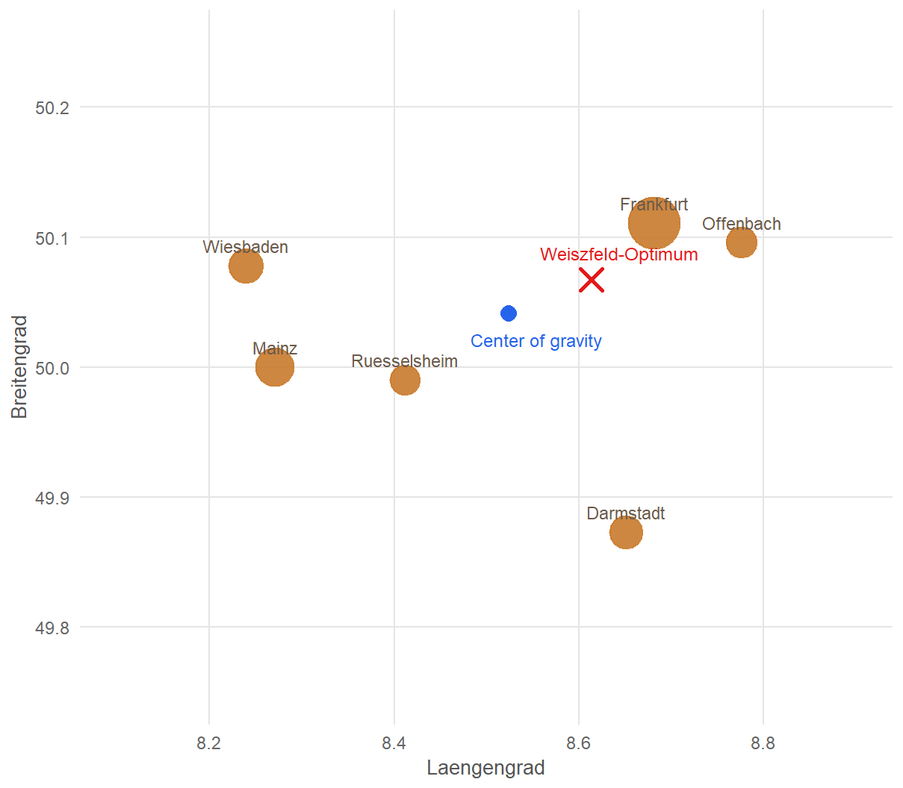
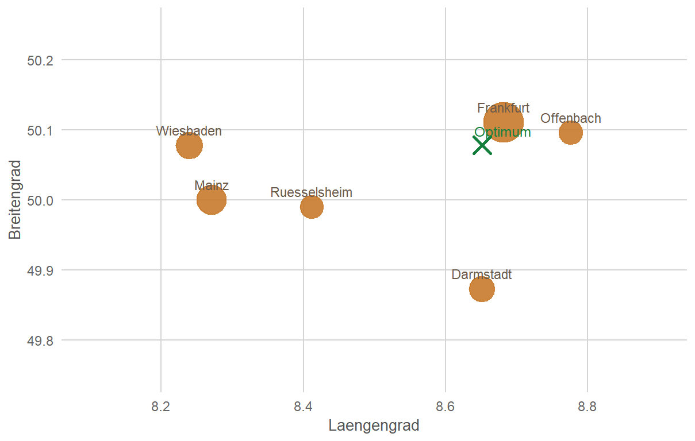

Standortplanung I: Qualitative und kontinuierliche Verfahren
Kapitel 5 · Supply Chain Management & Distribution
Prof. Dr. Thomas Kirschstein
Strategische Gestaltung von Supply Chains
Strategische Gestaltung von Supply Chains
- Multikriterielle Standortplanung
- Kontinuierliche Standortplanung
- Diskrete Standortplanung
- Transportplanung
Lernziele
Nach dieser Einheit können Sie …
- Standortentscheidungen im strategischen Supply-Chain-Design einordnen,
- qualitative Standortfaktoren systematisch erfassen und bewerten,
- das AHP-Verfahren und Nutzwertverfahren erläutern und anwenden,
- die Eigenschaften unterschiedlicher Distanzmetriken erläutern und diese berechnen,
- kontinuierliche Standortverfahren auf einfache Entscheidungsprobleme anwenden und interpretieren.
Literatur zur Vertiefung
- Modellgestützte regionale Standortplanung und -entwicklung: (Kik 2022).
- Standortplanung und kontinuierliche Entscheidungsmodelle: (Thonemann 2023, Kapitel 3).
- Kontinuierliche Standortmodelle und lokale Gleichgewichte: (Cooper 1968).
Planung im Supply Chain Management
Supply Chain Planning Matrix

Strategische Netzwerkplanung
Zielstellung der Standortplanung
Entscheidung über Standort von:
- Auslieferungslägern
- Fabriken
- Verkaufsstandorten
- Versorgungslägern
- …
Strategische Netzwerkplanung
Phasen der Standortwahl

Strategische Netzwerkplanung
Standortplanungsprozess

(Kik 2022)
- Auf globaler Ebene Optionen meist überschaubar (Kontinent/Land) \(\rightarrow\) Faktoren stark vereinfacht und aggregiert \(\rightarrow\) unspezifisch, Ziel ist strategische Passfähigkeit
- Auf regionaler Ebene Ziel optimalen Standort identifizieren \(\rightarrow\) präzisere Anforderungen
Strategische Netzwerkplanung
Standortfaktoren

- Bewertung von Standorten für Ansiedlungen oft schwierig
- kurzfristig irreversible \(\rightarrow\) Pfadabhängigkeiten
- Mehrdimensional \(\rightarrow\) Auswirkungen auf Zielsystem schwer zu überblicken
- Subjektiv \(\rightarrow\) Einschätzung zu weichen Faktoren oft schwankend & Bedeutung wird unterschiedlich gewichtet
Strategische Netzwerkplanung
Methoden der Standortplanung

Merkmale von Optimierungsmodellen (Kik 2022)

- Qualitative Verfahren \(\rightarrow\) heuristische, meist umfragebasierte Verfahren \(\rightarrow\) Stimmungsbild und Sammlung individueller Einschätzungen
- Quantitative Verfahren
- Optimierung: Entscheidungsraum (Optionen) und eindimensionales Zielsystem nötig
- Simulation: komplex, schwer übertragbar,mehrdimensional
- Spielthorie: Antizipation des Konkurrentenverhalten \(\rightarrow\) Absatzmaximierung
- Investitionsrechnung: ausschließlich monetäre Größen (Optimierung)
Strategische Netzwerkplanung
Fallstudie: SushiFresh GmbH
SushiFresh GmbH ist ein fiktiver regionaler Hersteller frischer Sushi-Boxen im Rhein-Main-Gebiet, der täglich sechs Supermarkt-Filialen beliefert. Diese Fallstudie begleitet uns durch dieses und die folgenden Kapitel.
SushiFresh prüft, ob sich zusätzlich zur Auslieferung eine eigene Produktionsstätte lohnt, und hat drei Kandidatengrundstücke identifiziert.
# Sechs Filialen: Koordinaten, Tagesnachfrage mu und Standardabweichung sigma
filialen <- tibble(
Filiale = c("Wiesbaden", "Mainz", "Frankfurt", "Ruesselsheim", "Darmstadt", "Offenbach"),
lat = c(50.0782, 50.0000, 50.1109, 49.9904, 49.8728, 50.0956),
lon = c(8.2398, 8.2711, 8.6821, 8.4116, 8.6512, 8.7761),
mu = c(120, 150, 280, 90, 110, 95),
sigma = c(25, 30, 55, 20, 24, 22)
)
# Drei Kandidatenstandorte fuer die Produktionsstaette
standorte <- tibble(
Standort = c("Wiesbaden-Erbenheim", "Mainz-Hechtsheim", "Raunheim"),
lat = c(50.0632, 49.9698, 50.0000),
lon = c(8.2999, 8.2831, 8.4650),
Fixkosten = c(180000, 210000, 260000)
)
sum(filialen$mu) # Gesamtnachfrage: 845 Boxen/Tag[1] 845Qualitative Standortplanung
Nutzwertanalyse
Vorgehen
- Relevante Bewertungskriterien festlegen
- Kriteriengewichte bestimmen
- Alternativen je Kriterium bewerten
- Gewichtete Teilnutzwerte zum Gesamtnutzwert aggregieren
- Alternativen nach Gesamtnutzwert rangordnen
Kritische Punkte
- Additives Modell nur eingeschränkt interpretierbar
- Schlechte Ausprägungen können durch gute kompensiert werden
- Nutzenunabhängigkeit der Kriterien oft fraglich
- Ergebnisse reagieren empfindlich auf die Gewichtung
- Gefahr der Zielaufspaltung
Fallbeispiel
SushiFresh bewertet die drei Kandidatenstandorte Wiesbaden-Erbenheim, Mainz-Hechtsheim und Raunheim für die neue Produktionsstätte anhand der Kriterien Transportnähe, Mietkosten und Fachkräfteverfügbarkeit, die hier aus Vereinfachungsgründen gleich gewichtet werden.
Die Konstellation ist bewusst so gewählt, dass sich sehr unterschiedliche Standortprofile ergeben: Wiesbaden-Erbenheim ist stark bei den Mietkosten, Raunheim bei der Transportnähe, während Mainz-Hechtsheim bei den Fachkräften vorn liegt.
Gerade dieses Beispiel zeigt die Schwäche der additiven Nutzwertanalyse: Trotz klar unterschiedlicher Stärken- und Schwächenprofile können alle Alternativen denselben Gesamtnutzwert erreichen.
Qualitative Standortplanung
Nutzwertanalyse in R: Code und Ergebnistabelle
library(dplyr)
library(knitr)
# Tabelle mit Rohdaten der Fallstudie (drei Kriterien, gleich gewichtet)
nwa <- tibble(
Kriterium = c(
"Transportnaehe",
"Mietkosten",
"Fachkraefteverfuegbarkeit"
),
Gewicht = c(1/3, 1/3, 1/3),
`WI-Erb` = c(5, 8, 2),
`MZ-Hech` = c(2, 5, 8),
Raunheim = c(8, 2, 5)
)
# Berechne Nutzwerte der Standorte
nutzwert <- c(
`WI-Erb` = sum(nwa$Gewicht * nwa$`WI-Erb`),
`MZ-Hech` = sum(nwa$Gewicht * nwa$`MZ-Hech`),
Raunheim = sum(nwa$Gewicht * nwa$Raunheim)
)
# Verbinde Rohdaten und Nutzwerte in einer Tabelle
nwa <- bind_rows(nwa, nutzwert)
# Setze Namen Nutzwert in Zeile 4 und Spalte Kriterium
nwa$Kriterium[4] <- "Nutzwert"
# Gib Tabelle aus
nwa |>
mutate(
Gewicht = ifelse(is.na(Gewicht), "", sprintf("%.2f", Gewicht)), # Stelle 2 Nachkommastellen dar
`WI-Erb` = sprintf("%.1f", `WI-Erb`),
`MZ-Hech` = sprintf("%.1f", `MZ-Hech`),
Raunheim = sprintf("%.1f", Raunheim)
) |>
kable(
col.names = c("Kriterium", "Gewichtung", "WI-Erb", "MZ-Hech", "Raunheim"),
format = "html",
align = c("l", "c", "c", "c", "c")
)| Kriterium | Gewichtung | WI-Erb | MZ-Hech | Raunheim |
|---|---|---|---|---|
| Transportnaehe | 0.33 | 5.0 | 2.0 | 8.0 |
| Mietkosten | 0.33 | 8.0 | 5.0 | 2.0 |
| Fachkraefteverfuegbarkeit | 0.33 | 2.0 | 8.0 | 5.0 |
| Nutzwert | 5.0 | 5.0 | 5.0 |
Qualitative Standortplanung
Analytical Hierarchy Process (AHP Methode)

Ablauf
- Bilde paarweise Vergleiche zwischen allen Alternativen im Hinblick auf die Bewertungskriterien.
- Bilde für jedes Bewertungskriterium ein Alternativenranking (Synthese).
- Bilde paarweise Vergleiche zwischen allen Bewertungskriterien.
- Bilde ein Ranking der Bewertungskriterien (Synthese).
- Berechne den Scoring-Wert für die Alternativen.
Qualitative Standortplanung
Analytical Hierarchy Process (AHP Methode) - Beispiel
Fallbeispiel
SushiFresh vergleicht die drei Kandidatenstandorte Wiesbaden-Erbenheim (W-E), Mainz-Hechtsheim (M-H) und Raunheim (R) nun paarweise statt über direkt geschätzte Punktwerte. Folgende Bewertungskriterien werden herangezogen.
- Transportnähe: Distanz zu den sechs Filialen
- Mietkosten: jährliche Fixkosten des Grundstücks
- Fachkräfteverfügbarkeit: Zugang zu Gastronomie-/Lebensmittelfachkräften
Bewertungsskala
| Präferenz | Wert |
|---|---|
| Gleich | 1 |
| Gleich bis leicht bevorzugt | 2 |
| leicht bevorzugt | 3 |
| leicht bis deutlich bevorzugt | 4 |
| deutlich bevorzugt | 5 |
| deutlich bis stark bevorzugt | 6 |
| stark bevorzugt | 7 |
| Stark bis extrem bevorzugt | 8 |
| Extremely preferred | 9 |
Qualitative Standortplanung
Analytical Hierarchy Process (AHP Methode) - Beispiel
Ablauf
- Bilde paarweise Vergleiche zwischen allen Alternativen im Hinblick auf die Bewertungskriterien.
- Bilde für jedes Bewertungskriterium ein Alternativenranking (Synthese).
- Bilde paarweise Vergleiche zwischen allen Bewertungskriterien.
- Bilde ein Ranking der Bewertungskriterien (Synthese).
- Berechne den Scoring-Wert für die Alternativen.
Transportnähe
| site | W-E | M-H | R |
|---|---|---|---|
| W-E | 1 | 2 | 1/2 |
| M-H | 1/2 | 1 | 1/3 |
| R | 2 | 3 | 1 |
Mietkosten
| site | W-E | M-H | R |
|---|---|---|---|
| W-E | 1 | 2 | 4 |
| M-H | 1/2 | 1 | 2 |
| R | 1/4 | 1/2 | 1 |
Fachkräfte
| site | W-E | M-H | R |
|---|---|---|---|
| W-E | 1 | 1/7 | 2 |
| M-H | 7 | 1 | 5 |
| R | 1/2 | 1/5 | 1 |
Qualitative Standortplanung
Analytical Hierarchy Process (AHP Methode) - Beispiel
Ablauf
- Bilde paarweise Vergleiche zwischen allen Alternativen im Hinblick auf die Bewertungskriterien.
- Bilde für jedes Bewertungskriterium ein Alternativenranking (Synthese).
- Bilde paarweise Vergleiche zwischen allen Bewertungskriterien.
- Bilde ein Ranking der Bewertungskriterien (Synthese).
- Berechne den Scoring-Wert für die Alternativen.
Transportnähe — Synthese (Berechnung des größten Eigenvektors)
Spaltensummen
| site | W-E | M-H | R |
|---|---|---|---|
| W-E | 1 | 2 | 1/2 |
| M-H | 1/2 | 1 | 1/3 |
| R | 2 | 3 | 1 |
| \(\sum\) | 7/2 | 6 | 11/6 |
Normierung
| site | W-E | M-H | R |
|---|---|---|---|
| W-E | 2/7 | 1/3 | 3/11 |
| M-H | 1/7 | 1/6 | 2/11 |
| R | 4/7 | 1/2 | 6/11 |
| \(\sum\) | 1 | 1 | 1 |
Konsolidierung
| site | W-E | M-H | R | \(\varnothing\) |
|---|---|---|---|---|
| W-E | 0.29 | 0.33 | 0.27 | 0.297 |
| M-H | 0.14 | 0.17 | 0.18 | 0.163 |
| R | 0.57 | 0.50 | 0.55 | 0.540 |
| \(\sum\) | 1 | 1 | 1 | 1 |
Qualitative Standortplanung
Analytical Hierarchy Process (AHP Methode) - Beispiel
Ablauf
- Bilde paarweise Vergleiche zwischen allen Alternativen im Hinblick auf die Bewertungskriterien.
- Bilde für jedes Bewertungskriterium ein Alternativenranking (Synthese).
- Bilde paarweise Vergleiche zwischen allen Bewertungskriterien.
- Bilde ein Ranking der Bewertungskriterien (Synthese).
- Berechne den Scoring-Wert für die Alternativen.
Präferenzvektoren aller Standorte für alle Kriterien
| site | Transportnähe | Mietkosten | Fachkräfte |
|---|---|---|---|
| WI-Erb | 0.297 | 0.571 | 0.160 |
| MZ-Hech | 0.163 | 0.286 | 0.730 |
| Raunheim | 0.540 | 0.143 | 0.110 |
Qualitative Standortplanung
Analytical Hierarchy Process (AHP Methode) - Beispiel
Ablauf
- Bilde paarweise Vergleiche zwischen allen Alternativen im Hinblick auf die Bewertungskriterien.
- Bilde für jedes Bewertungskriterium ein Alternativenranking (Synthese).
- Bilde paarweise Vergleiche zwischen allen Bewertungskriterien.
- Bilde ein Ranking der Bewertungskriterien (Synthese).
- Berechne den Scoring-Wert für die Alternativen.
| Kriterium | Transportnähe | Mietkosten | Fachkräfte |
|---|---|---|---|
| Transportnähe | 1 | 3 | 2 |
| Mietkosten | 1/3 | 1 | 1/5 |
| Fachkräfte | 1/2 | 5 | 1 |
| \(\sum\) | 11/6 | 9 | 16/5 |
Qualitative Standortplanung
Analytical Hierarchy Process (AHP Methode) - Beispiel
Ablauf
- Bilde paarweise Vergleiche zwischen allen Alternativen im Hinblick auf die Bewertungskriterien.
- Bilde für jedes Bewertungskriterium ein Alternativenranking (Synthese).
- Bilde paarweise Vergleiche zwischen allen Bewertungskriterien.
- Bilde ein Ranking der Bewertungskriterien (Synthese).
- Berechne den Scoring-Wert für die Alternativen.
Nach demselben Verfahren (geometrisches Mittel der Zeilen, dann normieren) wie auf der vorherigen Folie für die Standorte ergibt sich für die drei Kriterien:
| Kriterium | Transportnähe | Mietkosten | Fachkräfte | \(\varnothing\) |
|---|---|---|---|---|
| Transportnähe | 6/11 | 1/3 | 10/16 | 0.501 |
| Mietkosten | 2/11 | 1/9 | 1/16 | 0.118 |
| Fachkräfte | 3/11 | 5/9 | 5/16 | 0.380 |
| \(\sum\) | 1 | 1 | 1 | 1 |
Qualitative Standortplanung
Analytical Hierarchy Process (AHP Methode) - Beispiel
Ablauf
- Bilde paarweise Vergleiche zwischen allen Alternativen im Hinblick auf die Bewertungskriterien.
- Bilde für jedes Bewertungskriterium ein Alternativenranking (Synthese).
- Bilde paarweise Vergleiche zwischen allen Bewertungskriterien.
- Bilde ein Ranking der Bewertungskriterien (Synthese).
- Berechne den Scoring-Wert für die Alternativen.
\(\left( \begin{array}{ccc} 0.297 & 0.571 & 0.160 \\ 0.163 & 0.286 & 0.730 \\ 0.540 & 0.143 & 0.110 \end{array} \right) \times \left( \begin{array}{c} 0.501\\ 0.118\\ 0.380 \end{array} \right) = \left( \begin{array}{c} 0.280\\ 0.390\\ 0.330 \end{array} \right) \begin{array}{c} \text{= Score WI-Erb}\\ \text{= Score MZ-Hech}\\ \text{= Score Raunheim} \end{array}\)
Ergebnis: Beste Alternative ist Mainz-Hechtsheim — allerdings nur knapp vor Raunheim!
Vorteile AHP
- Paarweises Vergleichen erhöht die Transparenz und vereinfacht die Rangbildung zwischen Alternativen.
- AHP bietet der “Voreingenommenheit” von Entscheidern weniger Angriffsfläche als die Nutzwertanalyse.
- Irrationale Beurteilungen der Entscheider können durch einen Konsistenzindex erfasst werden
Qualitative Standortplanung
Analytical Hierarchy Process (AHP Methode) - Konsistenzindex
- Produkt aus nicht-normalisierter Präferenzmatrix und Präferenzvektor (Kriterienvergleich): \[\left(\begin{array}{ccc} 1 & 3 & 2 \\ 1\!/\!3 & 1 & 1\!/\!5 \\ 1\!/\!2 & 5 & 1 \\ \end{array} \right)\times\left(\begin{array}{c} 0.501\\ 0.118\\ 0.380\\ \end{array}\right)=\left(\begin{array}{c} 1.615 \\ 0.361\\ 1.221\\ \end{array}\right)\]
- Dividiere den Vektor komponentenweise durch die Präferenzwerte: \[\begin{align*} 1.615 / 0.501 &= 3.224\\ 0.361 / 0.118 &= 3.059\\ 1.221 / 0.380 &= 3.212\\ \text{average }\bar{P} &= 3.165 \end{align*}\]
- Berechne den Konsistenzindex mit \(n=3\) durch \[ KI =\frac{\bar{P}- n}{n-1} = \frac{3.165-3}{2} = 0.082. \]
- Berechne die Konsistenzrate mit dem Random Index \(RI\) (für \(n=3\): \(RI = 0.58\)): \[ CR = \frac{KI}{RI} = \frac{0.082}{0.58} = 0.14. \]
Interpretation
\(\bar{P}\) ist der größte Eigenwert der Präferenzmatrix. Bei \(KI=0\) ist sie perfekt konsistent. Geprüft wird aber die Konsistenzrate: Faustregel \(CR < 0{,}1\). Mit \(CR \approx 0{,}14\) ist die Kriterienmatrix nicht hinreichend konsistent – die Paarvergleiche sollten überprüft werden.
\(RI\) nach Saaty: \(n=3\): 0,58; \(n=4\): 0,90; \(n=5\): 1,12
Strategische Gestaltung von Supply Chains
- Multikriterielle Standortplanung
- Kontinuierliche Standortplanung
- Diskrete Standortplanung
Kontinuierliche Standortplanung
Neoklassische Standorttheorie – Steiner-Weber-Modell
Annahmen
- Eine homogene Ebene (Absatzgebiet), in der sich eine endliche Anzahl von Kundenstandorten befindet.
- Nachfragemengen sind für jeden der Kundenstandorte gegeben und muss vollständig bedient werden.
- Eine Transportkostenfunktion, die von der Transportentfernung und der Transportmenge abhängt.
- Zeit wird nicht betrachtet

Ziel
Gesucht ist der transportkostenminimale Standort für eine Produktions-, Lager- oder Umschlagsstelle im Absatzgebiet — bei SushiFresh: der ideale Punkt im Rhein-Main-Gebiet für die neue Produktionsstätte, unabhängig von den drei konkret verfügbaren Grundstücken.
Kontinuierliche Standortplanung
Neoklassische Standorttheorie – Steiner-Weber-Modell
Modellformulierung
Bestimme Koordinaten \((x,y)\) im Absatzgebiet, die die gewichtete gesamte Transportdistanz zu den Kundenstandorten minimieren.
\[ \min\; Z(x,y) = \sum_{i=1}^{n} a_i \cdot d\big((x,y),(u_i,v_i)\big) \]
Entscheidungsvariable
- \((x,y)\): Koordinaten des zu bestimmenden Standorts.
Parameter
- \((u_i,v_i)\): Koordinaten von Kundenstandort \(i\).
- \(a_i\): Nachfrage von Kundenstandort \(i\), bei SushiFresh: Boxen pro Tag.
- \(d(\cdot)\): verwendetes Distanzmaß.
Distanzmaße
- Euklidische Distanz: \(d = \sqrt{(x-u_i)^2 + (y-v_i)^2}\)
- Manhattan-Distanz: \(d = |x-u_i| + |y-v_i|\)
- Straßendistanzen: kürzeste Wege in einem Verkehrsnetz.
Kontinuierliche Standortplanung
Steiner-Weber-Modell bei euklidischer Distanz
Iterativer Lösungsansatz
Für gegebene Kundenstandorte \((u_i,v_i)\) und Gewichte \(a_i\) gilt mit
\[ g_i(x,y)=\frac{a_i}{\sqrt{(x-u_i)^2+(y-v_i)^2}} \]
die Update-Regel
\[ x_{t+1}=\frac{\sum_{i=1}^n u_i\, g_i(x_t,y_t)}{\sum_{i=1}^n g_i(x_t,y_t)}, \qquad y_{t+1}=\frac{\sum_{i=1}^n v_i\, g_i(x_t,y_t)}{\sum_{i=1}^n g_i(x_t,y_t)}. \]
Weiszfeld-Algorithmus (vereinfacht)
- Wähle eine Startlösung \((x_0,y_0)\), z. B. den gewichteten Schwerpunkt.
- Berechne mit der Update-Regel einen neuen Standort.
- Wiederhole den Schritt bis die Änderung kleiner als eine Toleranz ist.
Umsetzung in R
steiner_weber_euclid <- function(data, x0 = NULL, y0 = NULL,
tol = 1e-6, max_iter = 1000) {
# data muss die Spalten u, v und a enthalten:
# u = x-Koordinate der Kunden
# v = y-Koordinate der Kunden
# a = Nachfragegewicht
stopifnot(all(c("u", "v", "a") %in% names(data)))
# Startwert: gewichteter Schwerpunkt, falls nichts vorgegeben ist
if (is.null(x0)) x0 <- sum(data$a * data$u) / sum(data$a)
if (is.null(y0)) y0 <- sum(data$a * data$v) / sum(data$a)
x <- x0
y <- y0
history <- data.frame(
iter = 0,
x = x,
y = y,
delta = NA_real_
)
for (t in 1:max_iter) {
# Abstand des aktuellen Standorts zu jedem Kunden
d <- sqrt((x - data$u)^2 + (y - data$v)^2)
# Iterationsgewichte gemäß Weiszfeld-Algorithmus
g <- data$a / d
# Aktualisierung der Koordinaten
x_new <- sum(data$u * g) / sum(g)
y_new <- sum(data$v * g) / sum(g)
# Änderung zwischen zwei Iterationen
delta <- sqrt((x_new - x)^2 + (y_new - y)^2)
history <- rbind(
history,
data.frame(iter = t, x = x_new, y = y_new, delta = delta)
)
# Abbruch bei hinreichend kleiner Änderung
if (delta < tol) {
return(list(
x = x_new,
y = y_new,
iter = t,
converged = TRUE,
history = history
))
}
x <- x_new
y <- y_new
}
list(
x = x,
y = y,
iter = max_iter,
converged = FALSE,
history = history
)
}Hinweise
- Nahe Kunden mit hoher Nachfrage erhalten im Iterationsschritt ein hohes Gewicht \(\rightarrow\) Standort verschiebt sich in diese Richtung
- Startwert zweckmäßig: gewichteter Schwerpunkt.
- Abbruch: kleine Positionsänderung oder maximale Iterationszahl.
Kontinuierliche Standortplanung
Steiner-Weber-Modell bei euklidischer Distanz - Beispiel
Animation des Iterationsverlaufs
Eingabedaten
| Filiale | Standort (u_i,v_i) | Nachfrage a_i |
|---|---|---|
| Wiesbaden | (8.2398; 50.0782) | 120 |
| Mainz | (8.2711; 50.0000) | 150 |
| Frankfurt | (8.6821; 50.1109) | 280 |
| Ruesselsheim | (8.4116; 49.9904) | 90 |
| Darmstadt | (8.6512; 49.8728) | 110 |
| Offenbach | (8.7761; 50.0956) | 95 |
Iterationen
| Iteration t | Standort (x,y) | Abweichung |
|---|---|---|
| 0 | (8.7500; 49.8500) | --- |
| 1 | (8.5959; 50.0087) | 0.2212 |
| 2 | (8.5851; 50.0443) | 0.0372 |
| 3 | (8.5868; 50.0536) | 0.0095 |
| 4 | (8.5904; 50.0565) | 0.0046 |
| 5 | (8.5937; 50.0581) | 0.0037 |
Kontinuierliche Standortplanung
euklidisches Steiner-Weber-Modell — Short cut
Center of gravity
Das Center of Gravity ist eine Schwerpunkt-Approximation des euklidischen Steiner-Weber-Problems (hier: Laengen-/Breitengrad naeherungsweise als planare Koordinaten behandelt):
\[ x^{CoG} = \frac{\sum_{i=1}^{n} a_i u_i}{\sum_{i=1}^{n} a_i}, \qquad y^{CoG} = \frac{\sum_{i=1}^{n} a_i v_i}{\sum_{i=1}^{n} a_i}. \] Für das SushiFresh-Beispiel gilt:
\[ (x^{CoG}, y^{CoG}) = (8.5241; 50.0410). \]
Das Center of Gravity ist schnell berechenbar, aber nur eine Approximation: Der iterative Steiner-Weber-Standort weist im Beispiel eine geringere nachfragegewichtete Gesamt-Haversine-Distanz auf (1.4016^{4} vs. 1.409^{4} Box-km).

Kontinuierliche Standortplanung
Steiner-Weber-Modell mit Manhattan-Distanzen
Steiner-Weber-Modell mit Manhattan-Distanzen
Bestimme Koordinaten \((x,y)\) im Absatzgebiet, die die gewichtete gesamte Transportdistanz zu den Kundenstandorten minimieren.
\[ \min \; Z(x,y) = \sum_{i=1}^{n} a_i \left( |x-u_i| + |y-v_i| \right) = \sum_{i=1}^{n} a_i |x-u_i| + \sum_{i=1}^{n} a_i |y-v_i| \]
Algorithmus für den optimalen Standort
Bestimme für jede Dimension den gewichteten Median — hier beispielhaft für die \(x\)-Koordinate (Längengrad):
- Sortiere die Filialen nach aufsteigenden \(u_i\)-Koordinaten.
- Bestimme die kumulierte Nachfrage \(A_j = \sum_{i=1}^{j} a_i\).
- Wähle den ersten Kunden mit \(A_j \geq \frac{1}{2}\sum_{i=1}^{n} a_i\).
- Seine \(u_i\)-Koordinate ist die optimale \(x\)-Koordinate.

Für das SushiFresh-Beispiel ergibt sich: \[ (x^*, y^*) = (8.6512; 50.0782) \]
Chopra, Sunil, and Peter Meindl. 2025. Supply Chain Management: Strategy, Planning, and Operation. 8th ed. Pearson.
Cooper, Leon. 1968. “Solutions of Generalized Locational Equilibrium Models.” Journal of Regional Science 8 (1): 1–18. https://doi.org/10.1111/j.1467-9787.1968.tb01319.x.
Kik, D. 2022. Zur Modellbasierten Entscheidungsunterstützung von Unternehmen in Der Regionalen Standortplanung Und -Entwicklung. Springer Fachmedien Wiesbaden GmbH.
Lahner, Jörg. 2020. “Regionalökonomie Und Standortfaktoren in Der Wirtschaftsförderung.” In Handbuch Innovative Wirtschaftsförderung, edited by Jürgen Stember, Matthias Vogelgesang, Philip Pongratz, and Alexander Fink. Springer Gabler. https://doi.org/10.1007/978-3-658-21404-3_31.
Thonemann, Ulrich W. 2023. Operations Management. 4th ed. Pearson.

Supply Chain Management